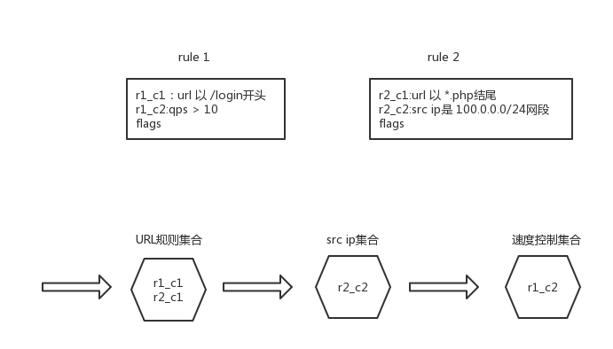

1.背景
越来越多的厂家通过nginx扩展的方式来实现CC防护，如何实现自动防护是一个很大的课题，我们先不讨论，本文主要想讨论的是，知道封禁规则的情况下，如何实现封禁。
2.实现
封禁的规则，自然有很多条件比如
- clientip
- 一个client（ip标识或什么标识）的访问速度
- URL
- User-Agent
- query
- cookie
- header
- referrer
其中上面任何几个可以混杂，比如我们知道了一个可疑的URL（攻击者频繁访问的URL），我们可以根据2和3混合起来，比如访问”/“的速度大于10qps的才封禁。也可能是user-agent为Mozilla/5.0 (Macintosh; Intel Mac OS X 10_12_6) AppleWebKit/537.36 ,访问/的条件。
总之可以随意混合起来，设置清洗条件。
那么我么改如何组织这些条件形成的规则，并且根据这些规则进行清洗呢？
粗糙一点，维护一个列表，每个元素是一个规则，每个规则里包含若干条件。
当一个请求到来的时候，遍历规则中的每个条件，如果都匹配，则认为规则匹配，然后执行对应的动作。否则判断下一个规则。依次类推。
但这样效率是不是有点低下了，有女朋友的工程师可能就满足了，但大部分显然不会。
进阶一点，我们把这些有限的特征类别分别组织一下，比如可能归类如下的几种：
- client ip以及此ip访问速率
- URL
- User-Agent
- Referer
- cookie
- header
当然酌情可以更多，我们可以把所有规则下的所有条件，分别扔到对应的分类里去。各个分类自己组织自己的查找结构，比如IP的用bit二分查找或者hash表，url是hyperscan
host的用字符串匹配等等。

整体上的流程就是，依次过这些所有的分类检查，如果匹配上，则在回调里设置相应的flag，如果rule的所有flags已经标志满，则认为该规则匹配上了，则执行相应的处理。
所以这样，我们基本不受规则数目影响，来完成所有规则的匹配操作。需要注意的是，我们可能在一个分类里hit上多个条件，记得每个都需要标志flag，不能只关心第一个。
再进阶一点，如果匹配的规则，也就是rule支持了优先级会怎样？我们怎么找到最高的优先级呢？有了上面的基础，我相信不困难了。
也就是当一个规则的flags标志满以后，不急于执行action，而是把规则和优先级记录在ctx上，如果后面有了更高级别优先级的rule匹配上了，则替换之，
总之会在所有的分类匹配结束后，得到一个最合适的rule，然后再执行回调即可。